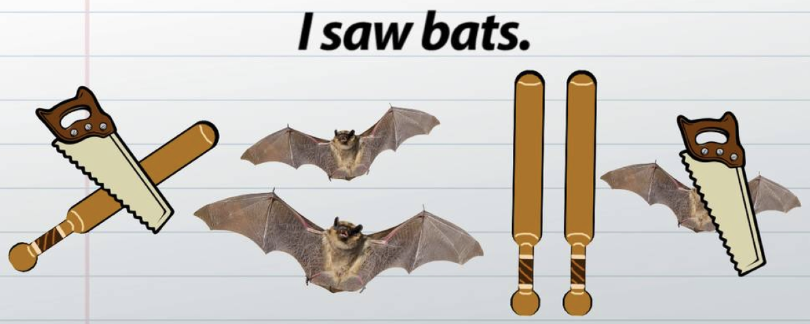
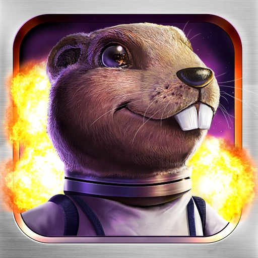
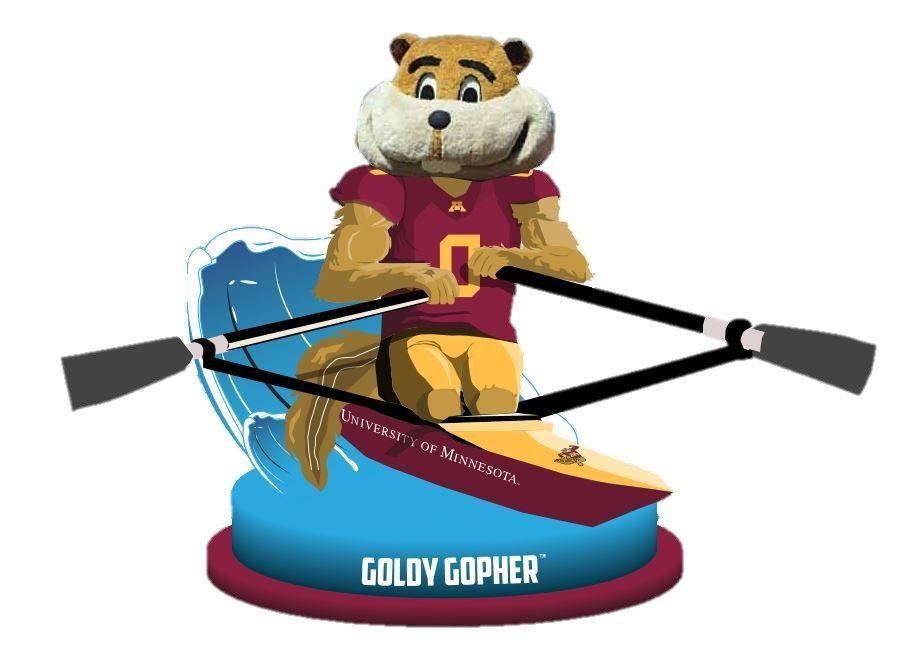
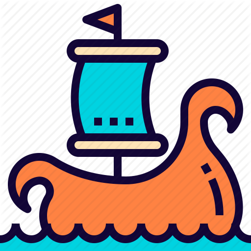
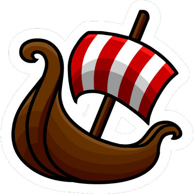

LingBuzz
Semantics archive
Snippets
Asking the Right Questions: Essays in Honor of Sandra Chung
LSA Publications

Spring 2020 Reading Activies
- [February 13 2020]: On the lexical meaning of inchoative states in Korean (Jiyoung, C. H. O. I. 2018)
- [February 27 2020]: TBA
- [March 5]: TBA
- [March 26]: TBA
- [April 9]: TBA
- [April 23]: TBA

Fall 2019 Reading Activies
- Week 2: [091219] Reading planning
- Week 3: [091919] Factivity, Belief and Discourse (Anand & Hacquard 2014)
- Week 4: [092619] A verb raising analysis of the Ojibwe VOS/VSO alternation (Hammerly 2019)
- Week 5: [100319] Inverse marking and Multiple Agree in Algonquin: Complementarity and variability (Oxford 2018)
- Week 6: [101019] Explaining DPs vs. CPs without syntax (Elliott 2016)
- Week 7: [101719] A first look at the semantics and pragmatics of negative questions and tag questions (Ladd 1981)
Aren't positive and negative polar questions the same? (Büring & Gunlogson 2000) - Week 8: [102419] Picky predicates: why believe doesn’t like interrogative complements, and other puzzles (Theiler et al. 2019)
- Week 9: [103119] Alternation in Ojibwe Optatives (work in-progress)
- Week 10: [110719] No meetings
- Week 11: [111419] Like/Type, Say, and C (Saito 2017)
- Week 12: [112119] The Structural Source of Split Ergativity and Ergative Case in Georgian (Nash 2017)
- Week 13: [112819] Thanksgiving Break
- Week 14: [120519] How to Say Ought in Foreign: The Composition of Weak Necessity Modals (von Fintel & Iatridou 2008)
- Happy Winter Break

Spring 2019 Reading Activies
- Week 2: [013119] Reading planning
- Week 3: [020719] Two readings: Read with Nicholas Rolle
(1) What tone teaches us about language? (Hyman 2018) -- [strongly recommanded] (2) Grammatical tone (GT): What is it, where is it, and what is it for? -- [first 10 pages at least] - Week 4: [021419] Read with Andrea Beltrama Pragmatic Halos (Lasersohn 1999) -- [with a focus on Page522-533, Section 1-4]
- Week 5: [022119] Read with Aron Hirsch
A case for conjunction reduction: Object DP conjunction as vP conjunction (Hirsch 2017) - Week 6: [022819] Read with Diti Bhadra: The dynamics of evidentials in questions (Diti Bhadra)
- Week 7: [030719] A day off 🍵
- Week 8: [031419] Pie-Day
- Week 9: [032119] Spring Break 😎
- Week 10: [032819] Two kinds of variable elements in Hmong anaphora (Mortensen 2003)
Read with the students from Field Methods - Week 11: [040419] On D-Trees, Beans, and B-Accents (Buring 2000)
Captain Jon - Week 12: [041119] April Snow Day ❄ ❅ ❆
- Week 13: [041819] Making a Pronoun: Fake Indexicals as Windows into the Properties of Pronouns (Kratzer 2009)
Captain Jason - Week 14: [042519] SRG discussion and write-ups
- Week 15: [050219] UROP presentation Tigrinya Morphosyntax [Presenter: Gebre Fleck]

Fall 2018 Reading Activies
- Week 2: [091318] Reading planning
- Week 3: [092018] Antipassive (Polinsky 2017)
Captain Borui - Week 4: [092718] In defense of the reflexivization analysis of anticausativization (Beavers & KoontezGarboden 2013)
Captain Jason - Week 5: [100418] The Present Perfect as an Epistemic Modal (Izvorski 1997)
Captain Claire - Week 6: [101118] Decomposing Color Expressions in Malayalam (Menon & Pancheva 2016)
Captain Borui - Week 7: [101818] National Chocolate Cupcake Day
- Week 8: [102518] Sole sisters (Coppock & Beaver 2011)
Captain Brian & Captain Jon - Week 9: [110118] “Final Hanging but” in American English (Izutsu & Izutsu 2014)
Captain Lola, Captain Dane, & Captain Polly - Week 10: [110818] Topic and Topic-Comment Constructions in Mandarin Chinese (Shi 2000)
Captain Borui - Week 11: [111518] Off-season: Pre-thank-s-giv-ing
- Week 12: [112218] Off-season: Thank-s-giv-ing
- Week 13: [112918] Role and Reference Grammar as a Framework for Linguistic Analysis (VanValin 2015)
Captain JP - Week 14: [120618] The position of to/∅-marked mimetics in Japanese sentence structure (Toratani 2016)
Captain Polly - Week 15: [121318] Unbreakable SRG is on Winter Break (Back in January 2019!)